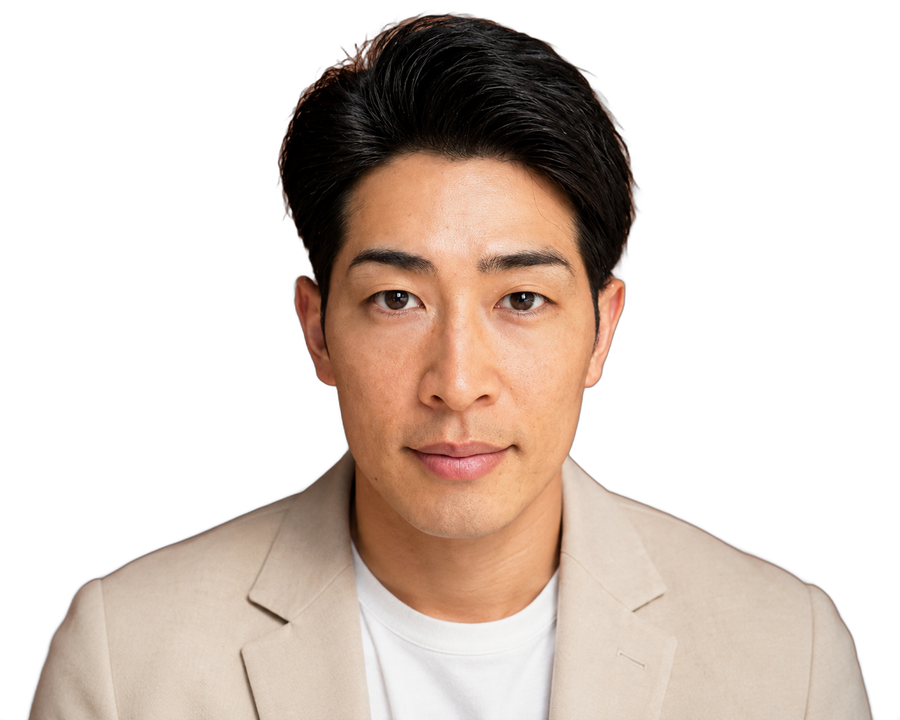

プロの世界で15年。グラウンドで見てきたすべてを、これからの子どもたちのために。代表・安部友裕からのメッセージです。

「個性と才能を、一緒に解放していきましょう。」
私は広島東洋カープで、15年間プレーしてきました。一軍の舞台の厳しさも、結果が出ない日々の悔しさも、データと向き合って自分を変えていく面白さも——野球がくれるすべてを、この身体で経験してきました。
いま、野球離れが進んでいます。その背景には、根性論・精神論・経験論だけに頼った指導が、子どもたちの可能性を狭めてしまっている現実があると感じています。「なぜできないのか」を誰も説明してくれないまま、好きだったはずの野球から離れていく。そんな未来を、私は変えたい。
このスクールでは、そんな子どもたちに寄り添い、動きや感覚を数値化することで、客観的に「今の自分」を知ることができます。数字は、誰のことも否定しません。昨日の自分と比べて、何がどれだけ伸びたのか——それを一緒に確かめながら、一歩ずつ前に進んでいける場所です。
一人ひとりに必ずある個性と、これから解き放たれる才能を、一緒に解放していきましょう。グラウンドで待っています。
株式会社HAKI pro 代表安部 友裕